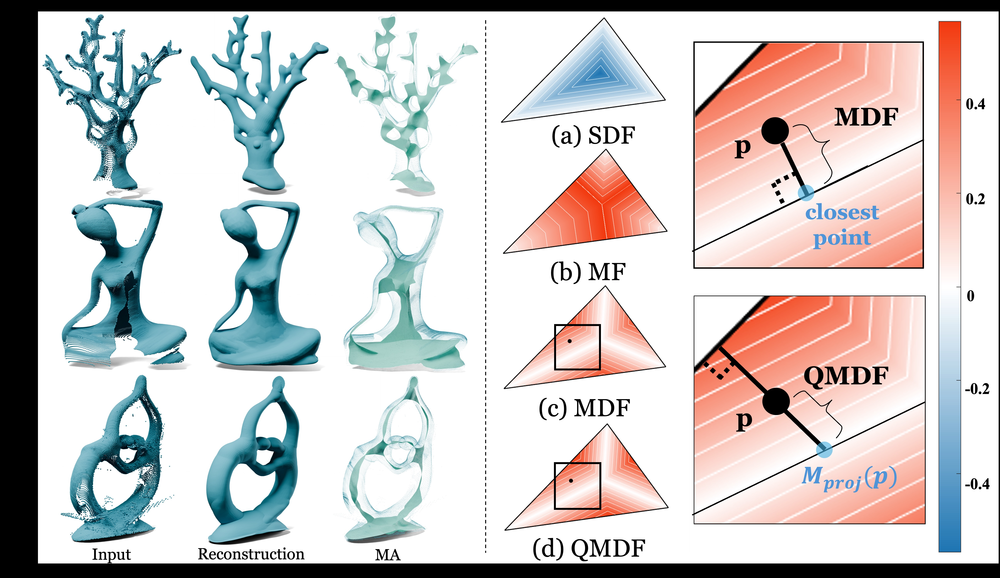
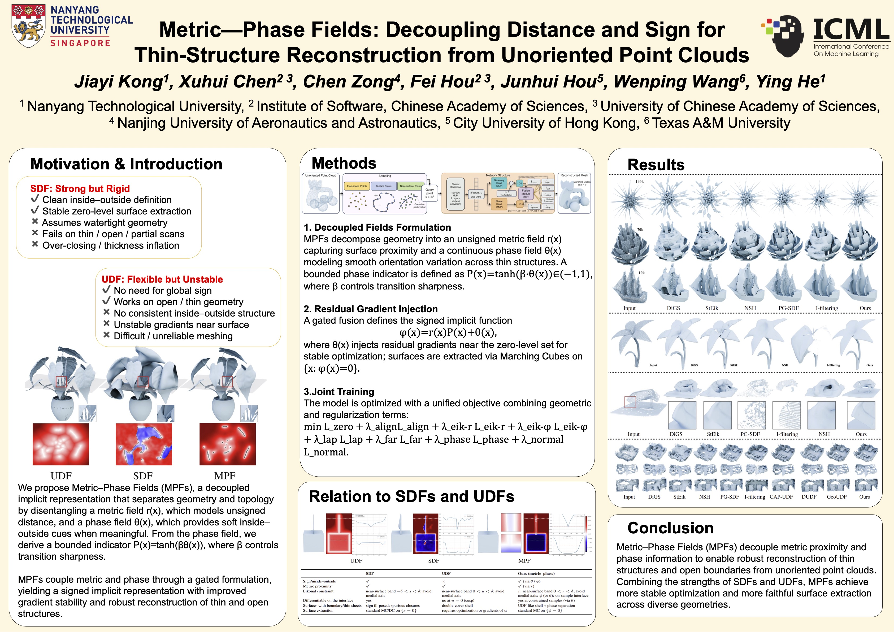
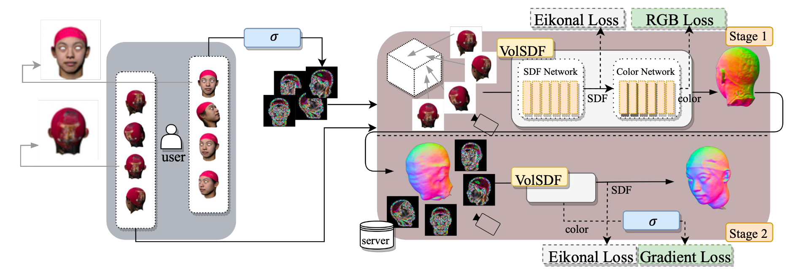
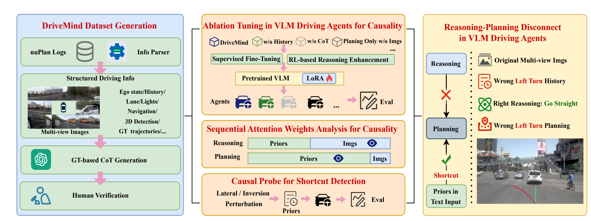

Publications
Mostly first-author works at top graphics & ML venues. * denotes equal contribution.
-

pub-qmdf.jpgACM TOG 2026 · SIGGRAPHQuasi-Medial Distance Field (Q-MDF): A Robust Method for Approximating and Discretizing Neural Medial Axis
-
 pub-vad.jpgACM TOG · in press
pub-vad.jpgACM TOG · in pressVoronoi-Assisted Diffusion for Computing Unsigned Distance Fields from Unoriented Points
-

pub-mpf.jpgICML 2026Metric-Phase Fields: Decoupling Distance and Sign for Thin-Structure Reconstruction from Unoriented Point Clouds
-

pub-deepfake.jpgAAAI 2025Do Not Deepfake Me: Privacy-Preserving Neural 3D Head Reconstruction Without Sensitive Images
-

pub-dagger.jpg